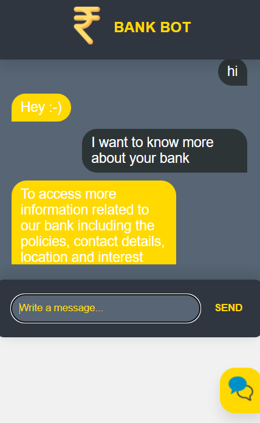
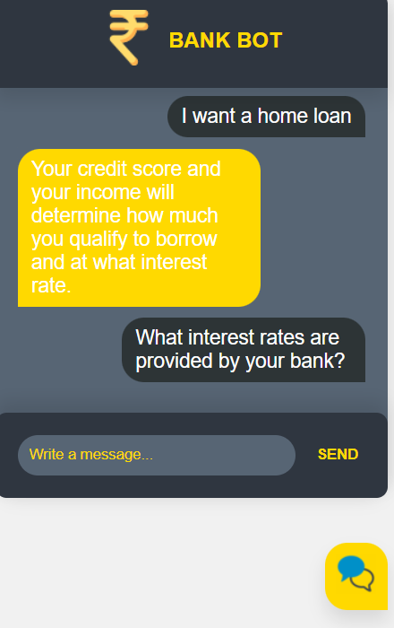
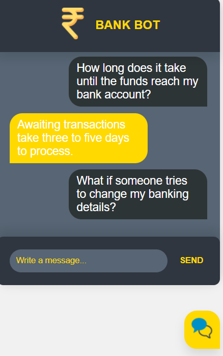
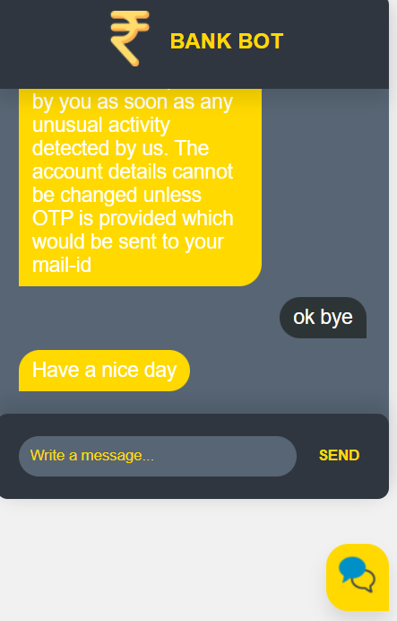
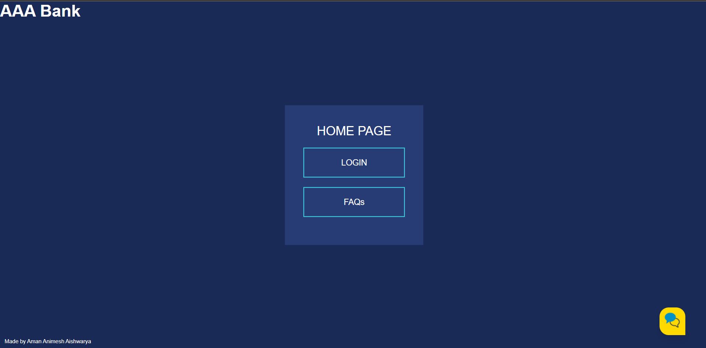
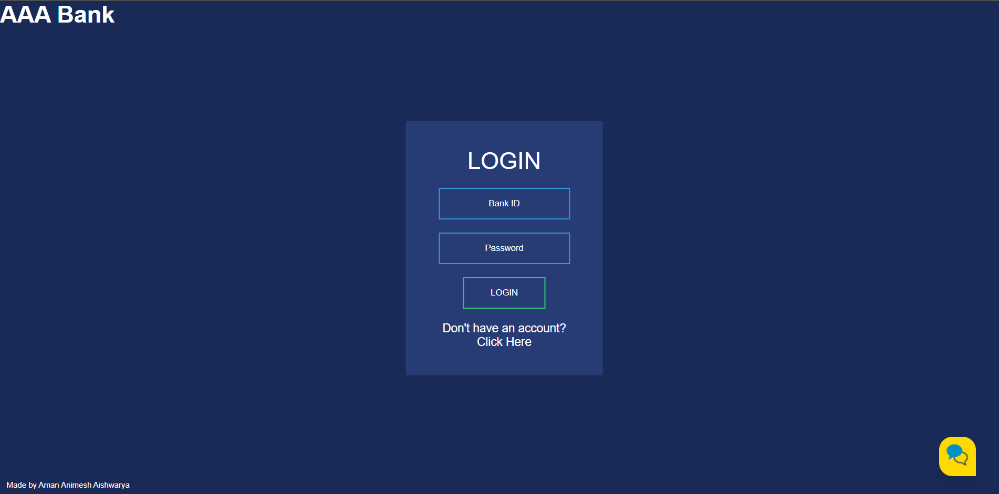
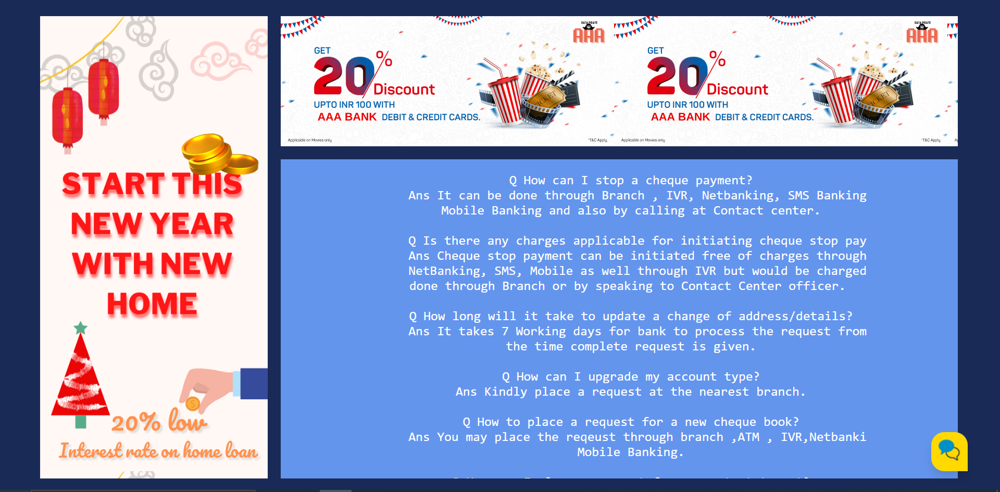
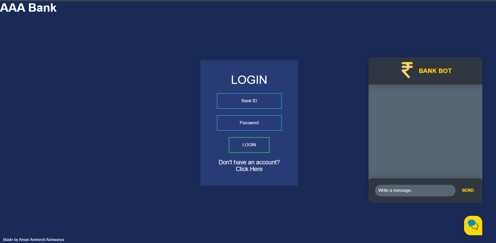
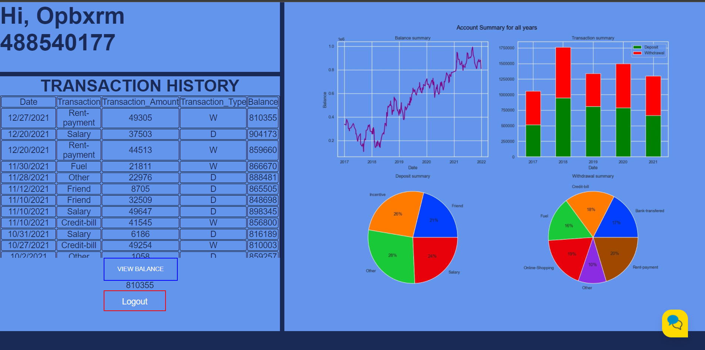

BankBot Using NLP
Introduction
In this report, I have explained the implementation of the code and methods that I have used to build a BankBot.
Summary
So What is a Chat Bot or to be specific a Bank Bot?
A chatbot or chatterbot is a software application used to conduct an online chat conversation via text or text-to-speech. Chatbots are used in dialog systems for various purposes including customer service, request routing, or information gathering. In this project, the Bank Bot answers the basic queries related to the Bank, the services that are provided by the bank and all the general questions or FAQs.
Technologies used in the project -
Python Pytorch NLP HTML CSS Javascript Pandas Numpy Matplotlib Seaborn
Working of Bank Bot -
Dataset
The queries(questions and answers) on which the bankbot will be trained is stored in the file intents.json. The queries have been scrapped from various banking websites and also general information available when searched. When the user asks a particular question, in order to receive correct or appropriate response many procedures take place. After receiving questions the sentences go through the process of Tokenisation, Stemming and bag of words which is a part of NLTK. Let me explain each process in detail.
- So what does it mean when we tokenise a sentence? To split sentence into array of words/tokens. A token can be a word or punctuation character, or number.
- Stemming stemming = find the root form of the word examples: words = [“organize”, “organizes”, “organizing”] words = [stem(w) for w in words] -> [“organ”, “organ”, “organ”]
- bag_of_words return bag of words array: 1 for each known word that exists in the sentence, 0 otherwise example: sentence = [“hello”, “how”, “are”, “you”] words = [“hi”, “hello”, “I”, “you”, “bye”, “thank”, “cool”] bag = [ 0 , 1 , 0 , 1 , 0 , 0 , 0] With the help of these techniques the user will receive an appropriate response even when the user has a typo or asks a question in a different way ;)
Here are some screenshots of the working of Bankbot -




Here we have used basic questions or queries to train our model for demonstration purpose. But questions can always be changed or upgraded by training the model with those questions.
Training -
The Pytorch Neural Network is used to train the model. Activation Function - RELU Loss - CrossEntropyLoss optimizer - Adam No of epochs - 1000 learning_rate = 0.001
Databases Used
Other than the BankBot we have also created a website where the registered Account holder can retrieve the Account and transaction details if the user provides the login details that matches the details in the database. The following databases have been used-
- Login details(password and account ID)
- Transaction details
- Personal details.
User Interface and Flask
Website Home page 
Page 2 - Login Page 
Page 3  This is the FAQs Page where one can access site information and interest rates provided by the bank.
Page 4 - How the chatbot looks on our site. 
Dashboard
The Dashboard has been created using Python Pandas, Matplotlib and Seaborn.
Page 5

The Dashboard will give all the details related to the Transaction history of the Account Holder. The name and Acoount ID is displayed on the top. The Transaction Details are analysed and displayed for the User to get quick glance on the information via different visualisations.
The Charts give data about the following-
- Balance Summary
- Transaction summary
- Deposit Summary
- Withdrawal Summary
Thankyou for taking your time and reviewing the project.
You will find the source code for the following in my github account. Link to the project - https://github.com/AishwaryaKshirsagar/Bankbot